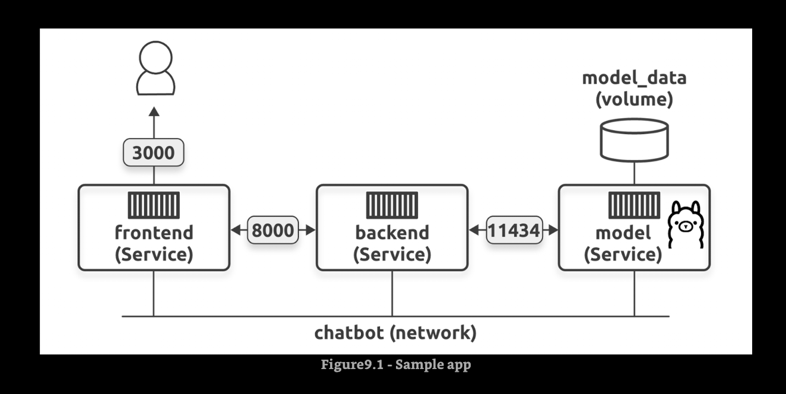

Multi-container apps with Compose¶
The network is important¶

fig->docker-compose->docker composedocker compose -f ./llm/chatbot.yaml up
For the Frontend app¶
docker build -t ai-chatbot:frontend .
docker run -it --detach --name macorina --publish 80:80 ai-chatbot:frontend
For the Backend app¶
docker build -t ai-chatbot:backend .
docker run -it --detach --name mastroeni --publish 8000:8000 ai-chatbot:backend
For the AI model app¶
docker build -t ai-chatbot:ai-model .
docker run -it --detach --name macario --publish 8001:8000 --env-file /Users/frgonzal/Documents/vit/docker-containers/ai-compose/ai-model/.env ai-chatbot:ai-model
Commands¶
docker compose versiondocker compose down -v --remove-orphansdocker system prune -fdocker compose build --no-cachedocker compose updocker compose build frontenddocker compose updocker compose downdocker compose up --detachdocker compose psdocker compose logs -fdocker compose logs -f backenddocker network lsdocker volume lsdocker compose lsdocker compose downdocker compose topdocker compose stopdocker compose psdocker compose ps --alldocker compose restart